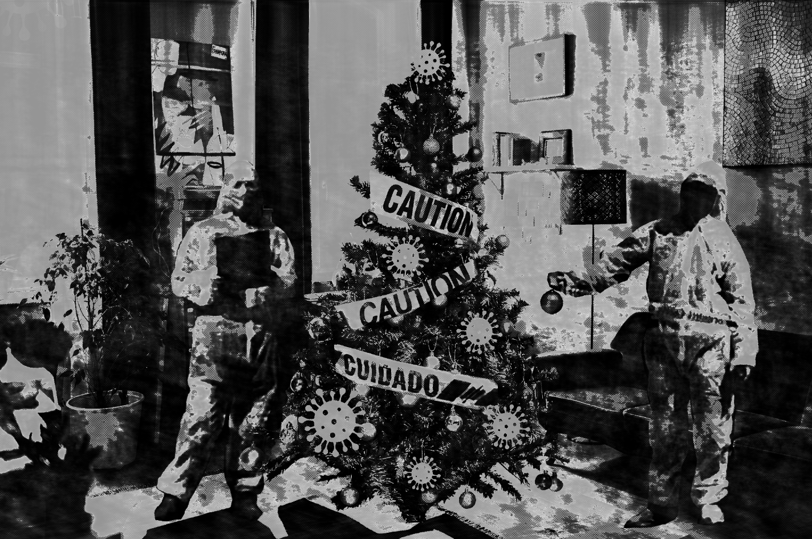
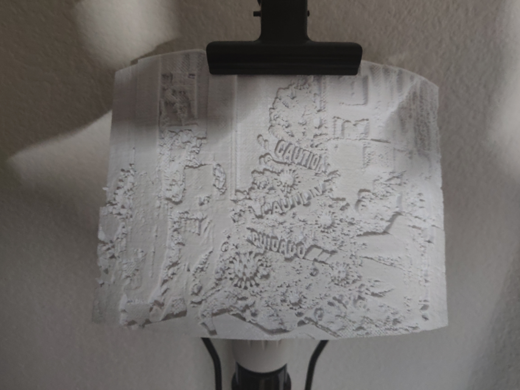
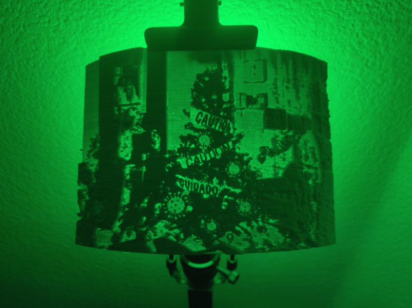
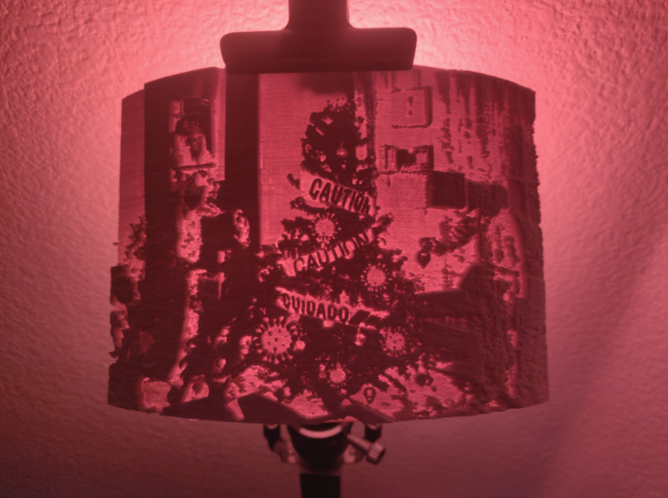

FINAL
my final project was creating an image that portrays this years holidays due to the pandemic. in the image, you see a christmas tree wrapped in caution tape, decorated with traditional christmas ornaments as well as coronavirus ornaments. beside the tree are two people both in hazmat suits, seperated by a generous 6 feet.
original image is created using open source materials available online from the websites pexels and unsplash using the search terms, hazmat, christmas tree, living room, caution and caution tape. in addition to putting them all together in a greyscale photo, i processed the images through audacity in the raw format, giving the photo a distinquishing half-tone effect when put back into photoshop.



